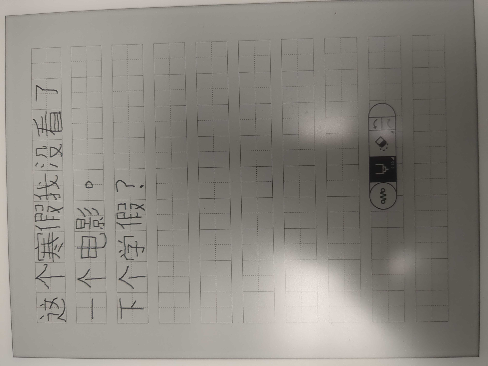
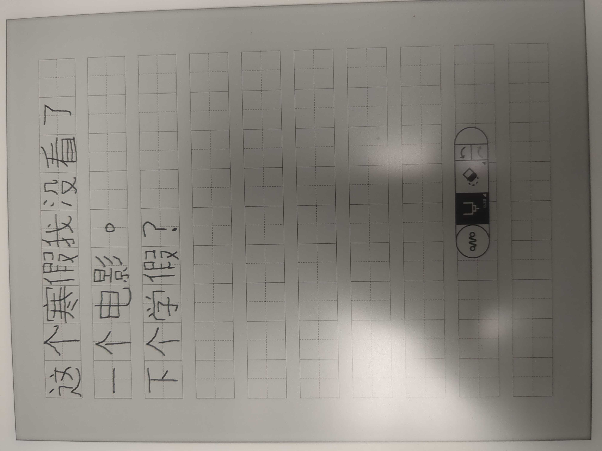
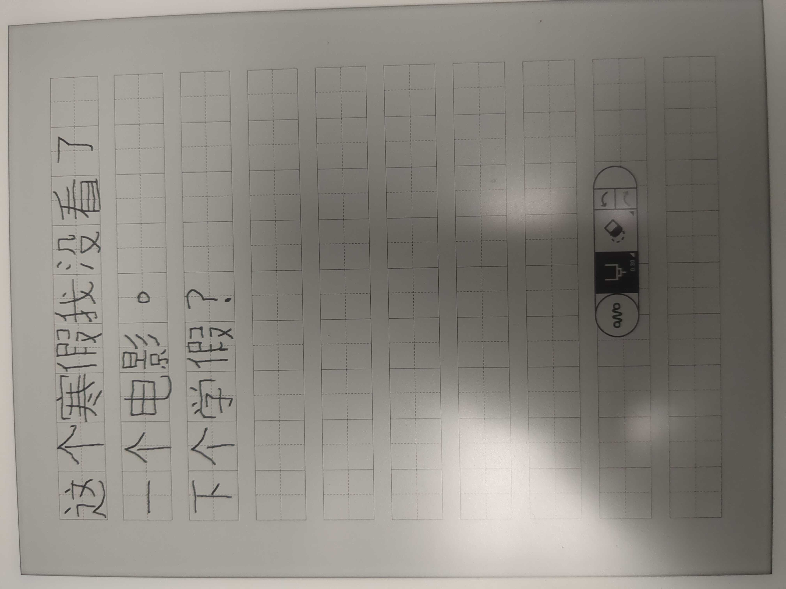

Transcript

Transcript
我的寒假
今年我的寒假很简单。我不但没坐车，
而且没坐飞机。因为很有雪，我不能
骑自行车。我只上线聊天跟朋友。
我们每天整天一起玩游戏。我每天起来
中午二点。我的家人给我一共一百五十快。
这个寒假我没看了一个电影。下个学期？
This memoir details my Winter Vacation at the end of 2022.
I wrote this at the beginning of the semester when my Chinese was a lot weaker, so I included some corrections at the bottom.
Have a look!

Transcript
我的寒假
今年我的寒假很简单。我不但没坐车，
而且没坐飞机。因为很有雪，我不能
骑自行车。我只上线聊天跟朋友。
我们每天整天一起玩游戏。我每天起来
中午二点。我的家人给我一共一百五十快。
这个寒假我没看了一个电影。下个学期？
These are in no particular order.
Yeah. Not everything that I need to include in the memoir is in my initial draft.
I neglected to name a single thing that I played, watched, listened to, or read...
所以我让你读下面写的话!
Addendum
一些月寒假后，我问朋友，“上个寒假的时候，我们玩什么游戏？”
他们不记得。我觉得我们玩了Minecraft，以外League of Legends。
音乐的话，我喜欢很多的外国音乐。我最喜欢的歌手们是大张伟、薛之謙、吳青峰、张尕怂、水曜日のカンパネラ、
新しい学校のリーダーズ、椎名林檎、和GYARI。还有更多，但是我不要写那么多的名字。